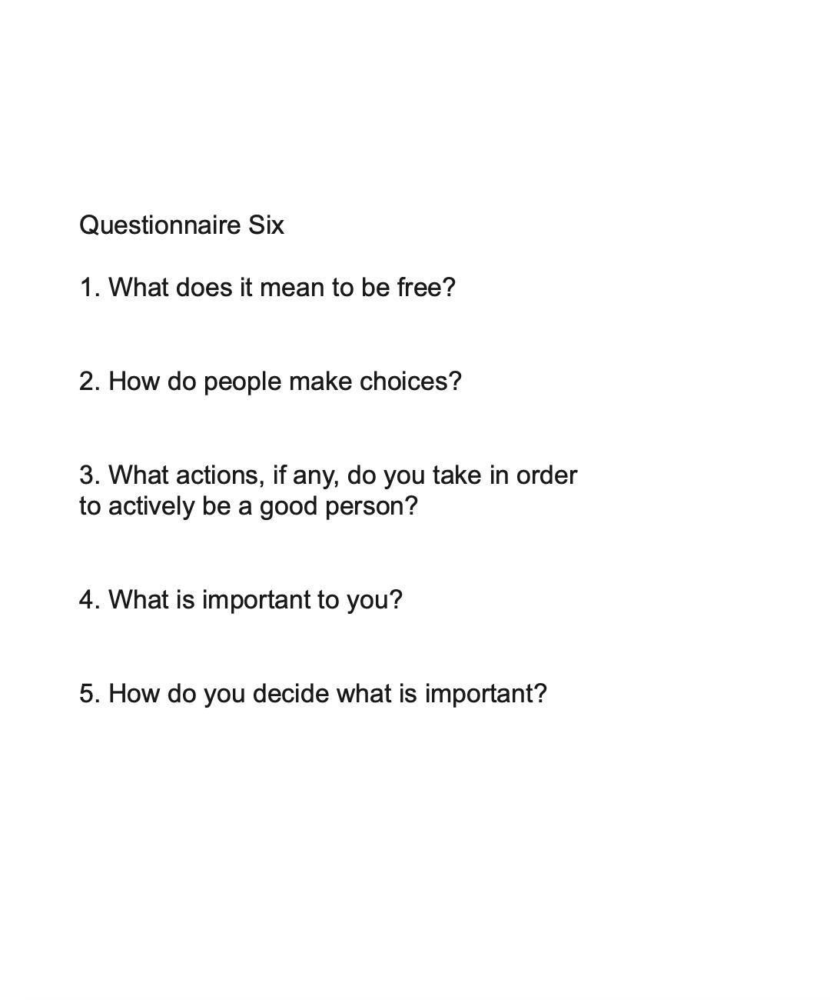
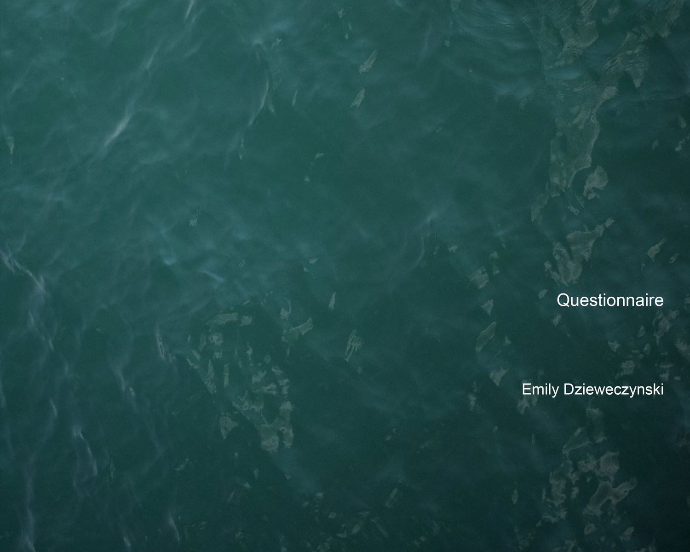

Questionnaire
Design / Installation / Sound
2020
Wandering through the streets of London, I found Max Frisch’s Questionnaire, a small book holding a series of questions regarding human nature and the universe. It became my companion as I traveled for the next year.
By asking these questions to strangers, I was allowed a brief look into their experience. It soon occurred to me that no one really knew the answers. This point of mutual curiosity and confusion led me to relate to and learn to love a vast amount of people.
By asking these questions to strangers, I was allowed a brief look into their experience. It soon occurred to me that no one really knew the answers. This point of mutual curiosity and confusion led me to relate to and learn to love a vast amount of people.


This is my questionnaire—a collection of some of the questions I asked the strangers I had just met and those I had known for a long time. Perhaps we can all empathize over the unknowns that the universe holds.